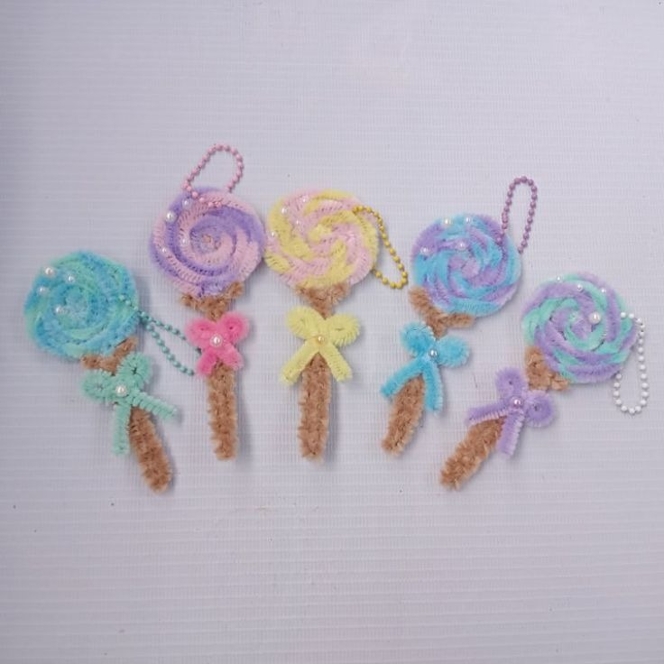
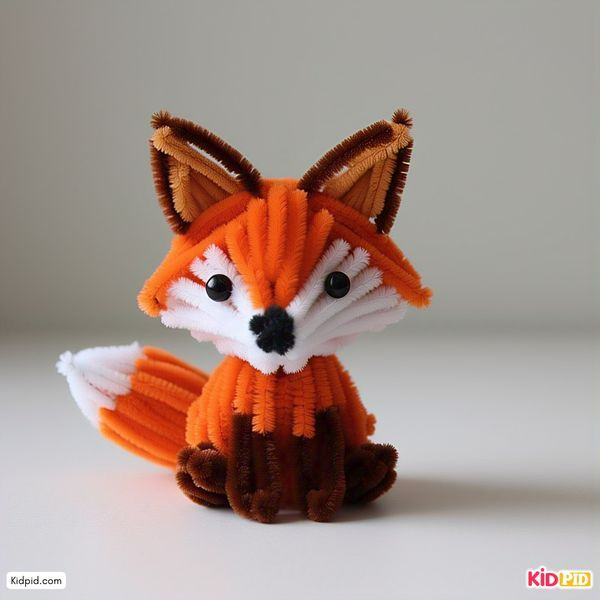

🌷 Şönil Çiçek Yapımı

Malzemeler:
• Şönil ipliği
• Tel veya pipet (sap için)
• Makas
Adımlar:
1- Şönil ipini küçük halkalar halinde katla ve tel ile sabitle.
2- Birkaç katı üst üste getirerek yaprak ve çiçek formu ver.
3- Tel veya pipeti sap olarak kullan.
🔑 Şönil ile Anahtarlık Yapımı

Malzemeler:
• Şönil ipliği
• Anahtarlık halkası
• Makas
Adımlar:
1- İpleri uygun uzunlukta kes.
2- İpleri anahtarlık halkasına bağla.
3- İplerden örgü ya da düğüm yaparak dekoratif bir anahtarlık oluştur.
🦊 Şönil İpliğiyle Hayvan Figürü Yapımı

Malzemeler:
• Turuncu şönil ipliği (gövde için)
• Beyaz şönil ipliği (yüz ve kuyruk ucu için)
• Siyah şönil ipliği veya boncuk (göz ve burun için)
• Makas
Adımlar:
1- Turuncu şönil ipliğini 15 cm kes, ikiye katlayıp küçük halka yaparak tilkinin başını oluştur.
2- Kulaklar için turuncu iplikten 2 adet küçük parça kes, beyaz iplikten küçük üçgen yaparak kulak içlerini oluştur ve turuncunun üzerine sar.
3- Kulakları başın üstüne bükerek sabitle.
4- Beyaz şönil ipliği ile yüzün alt kısmına beyaz detay ver (örneğin yüzün önüne bükerek bağla).
5- Gövde için 20 cm turuncu iplik al, bükerek gövdeyi yap, başa bağla.
6- Kuyruk için turuncu ipliği uzun tut ve ucuna beyaz iplik dolayarak kuyruk ucu yap.
7- Siyah boncuk veya iplik ile göz ve burun yap, yüzünü şekillendir.
8- Bacaklar için küçük iplik parçaları yaparak gövdeye bağla.